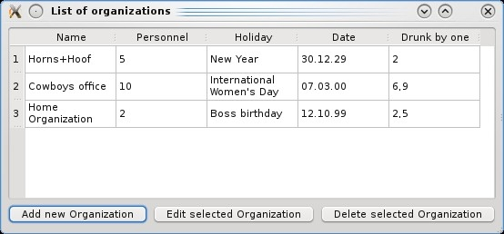

Архитектура Модель-Вид-Контроллер в Qt
Примечание: здесь показан пример простого случая, решение написано так, как того требует документация, так сказать "в лоб". Модель содержит как стандартные методы, необходимые для реализации интерфейса, так и дополнительные "для удобства". Такой подход сыграет злую шутку в тот момент, когда потребутся использовать прокси-модель. Потому что прокси-модель пропускает сквозь себя стандартные методы, и не умеет пропускать нестандартные.
Использование классов Qt, основанных на архитектуре модель/представление
В предыдущих статьях архитектура «Модель-Вид-Контроллер» была реализована в приложении «вручную»: все классы и соответствующие связи между ними определялись в программе явно. Но в Qt есть ряд классов уже применяющих этот подход. Использование их для решения задачи, в том числе и в качестве базовых классов, позволяет более удобно создавать сложные приложения.
Архитектура Qt модель/представление
Интерфейс любой Qt-модели базируется на классе QAbstractItemModel. Для того чтобы создать свою собственную модель, необходимо унаследовать либо этот класс, либо унаследованный от него. Например, его наследниками являются класс QAbstractListModel, представляющий собой одномерный список и класс QAbstractTableModel —двумерная таблица.
Все классы представлений базируются на классе QAbstractItemView. Для представления данных в Qt используются, в основном, три класса: QListView (отображает данные в виде одномерного списка), QTableView (отображает данные в виде таблицы) и QTreeView (отображает данные в виде иерархического списка).
Задача
Рассмотрим данные об организации как и в предыдущем примере: название, количество сотрудников, праздник, дата корпоративного собрания по его поводу и количество выпитых напитков. Пусть необходимо хранить и редактировать сведения о нескольких таких организациях. Данные о новой организации вводит пользователь по своему желанию.
Модель
Основной моделью приложения теперь будет список организаций. Для его создания можно использовать контейнерный класс QList. Это класс-шаблон, параметром которого является тип хранимых объектов. Мы будем хранить в нем объекты класса Organization. Этот класс был описан ранее, для решения данной задачи его можно немного упростить, убрав механизм сигналов и слотов и заменив конструктор с параметрами на конструктор по умолчанию. Заголовочный файл теперь будет выглядеть так:
#include <QString>
#include <QDate>
class Organization {
public:
Organization():drinkVolume(0), personnel(1){};
QDate getDate() const;
double getDrinkVolume() const;
QString getHoliday() const;
QString getName() const;
int getPersonnel() const;
double getDrunkPerPerson() const;
void setDate(const QDate &date);
void setDrinkVolume(const double drinkVolume);
void setHoliday(const QString &holiday);
void setName(const QString &name);
void setPersonnel(const int personnel);
private:
QString holiday;
double drinkVolume;
QDate date;
QString name;
int personnel;
};
Отобразить в окне приложения информацию о нескольких организациях так, чтобы пользователю было удобно ее просматривать и изменять, можно в виде двумерной таблицы. На отдельной строке этой таблицы будут располагаться сведения об одной организации – каждый параметр в отдельной ячейке. Передвигаясь по строкам, пользователь сможет увидеть весь список объектов и отредактировать, то что захочет.
Такой способ представления информации реализован в классе QTableView. Информация, которая будет размещена в таблице, должна храниться в соответствующей модели данных. Моделью может служить объект класса QAbstractTableModel или его наследника.
В нашем случае можно создать собственный класс-потомок QAbstractTableModel, полем которого будет указатель на QList<Organization>.
Каждый элемент модели имеет собственный индекс (объект класса QModelIndex) и набор атрибутов, называемых ролями. В табличной модели компонентами индекса являются номер строки и номер столбца элемента. Индекс позволяет получить доступ к соответствующему элементу. Роль – это значение из набора констант, которое определяет как элемент будет отображен на экране. Например роль Qt::DisplayRole используется для отображения информации, которую надо представить в виде текста.
Для реализации модели на базе класса QAbstractTableModel необходимо переопределить методы rowCount(), columnCount(), возвращающие количество строк и столбцов, и метод data(), ответственный за определение данных, которые соответствуют в модели определенному индексу и роли. Метод data() должен возвращать объект класса QVariant. Этот класс имеет большое количество конструкторов, параметрами которых являются объекты и переменные разных типов. Таким образом из различных данных можно создать объекты класса QVariant, используя подходящий конструктор. Переопределения этих трех методов достаточно, если необходимо только отображать данные.
Если модель допускает изменение данных, то необходимо переопределить метод flags(), в котором устанавливаются значения флага, определяющие набор действий с моделью. Кроме того, если изменение данных должно происходить непосредственно в таблице QTableView, то переопределяется метод setData(), где описывается изменение соответствующих параметров модели.
Переопределение ряда других методов класса QAbstractTableModel позволяет изменить его функциональность в соответствии с поставленной задачей. Например, с помощью метода headerData() можно задать заголовки строк и столбцов таблицы отображающей данные.
Нашу модель мы построим так, чтобы можно было просматривать и изменять данные. Редактирование и добавление объектов в список организаций будем осуществлять с помощью диалоговых окон. Поэтому переопределим методы rowCount(), columnCount(), data(), flags(), headerData() и определим собственные методы addOrganization() для добавления элемента в список, delOrganization() для удаления элемента из списка, getOrganization() для получения значения элемента по его индексу, а также getData() для преобразования заданного параметра организации в объект класса QVariant.
Заголовочный файл модели будет выглядеть так:
#include <QAbstractTableModel>
#include <QVariant>
#include <QList>
#include <QModelIndex>
#include "Organization.h"
class OrganizationsList : public QAbstractTableModel {
public:
OrganizationsList (QObject *parent);
int columnCount(const QModelIndex & parent = QModelIndex()) const;
int rowCount(const QModelIndex & parent = QModelIndex()) const;
QVariant data(const QModelIndex & index, int role = Qt::DisplayRole) const;
QVariant headerData ( int section, Qt::Orientation orientation, int role = Qt::DisplayRole ) const;
Qt::ItemFlags flags (const QModelIndex & index) const;
void addOrganization(Organization& newOrganization);
void delOrganization(const QModelIndex & index);
Organization& getOrganization(const QModelIndex & index) const;
private:
QList<Organization> *listOfOrganizations;
QVariant getData(int num, int position) const;
};
Рассмотрим методы подробно. В конструкторе просто создадим пустой список организаций:
OrganizationsList::OrganizationsList(QObject *parent) : QAbstractTableModel(parent) {
listOfOrganizations = new QList<Organization > ();
}
Для объекта класса Organization будем отображать в таблице пять параметров (название, количество сотрудников, праздник, дата корпоративного собрания по его поводу и количество выпитых напитков на одного сотрудника), поэтому количество столбцов в таблице должно быть равно пяти:
int OrganizationsList::columnCount(const QModelIndex & parent) const {
return 5;
}
Количество строк соответствует количеству организаций в списке, т. е. его размеру:
int OrganizationsList::rowCount(const QModelIndex& parent) const {
return listOfOrganizations->size();
}
Аргументами метода data() являются индекс элемента модели и его роль. Если роль элемента предназначена для отображения данных, то метод возвращает его представление в объекте класса QVariant. Для создания такого объекта вызывается метод нашего класса getData(), в котором по координатам ячейки определяется параметр организации и возвращается соответствующий объект класса QVariant (номер строки определяет организацию в списке, номер столбца – параметр). Если роль элемента другая или происходит обращение к несуществующим данным (последнее проверяется методом isValid() класса QModelIndex), то возвращается пустой объект QVariant:
QVariant OrganizationsList::data(const QModelIndex& index, int role) const {
if (index.isValid() && role == Qt::DisplayRole)
return getData(index.row(), index.column());
return QVariant();
}
QVariant OrganizationsList::getData(int num, int position) const {
switch (position) {
case 0:
return QVariant(listOfOrganizations->at(num).getName());
case 1:
return QVariant(listOfOrganizations->at(num).getPersonnel());
case 2:
return QVariant(listOfOrganizations->at(num).getHoliday());
case 3:
return QVariant(listOfOrganizations->at(num).getDate());
case 4:
return QVariant(listOfOrganizations->at(num).getDrunkPerPerson());
default:
return QVariant();
}
}
Переопределим также метод headerData() для заголовков в таблице. Первый аргумент определяет номер заголовочной ячейки, второй – расположение: по вертикали размещаются заголовки строк, в них должен быть номер организации по порядку; по горизонтали – названия параметров организации (Name – название, Personnel – количество сотрудников, Holiday – праздник, Date – дата проведения, Drunk by one – сколько выпито на одного человека), третий – роль элемента, в нашем случае это роль для отображения данных в виде текста:
QVariant OrganizationsList::headerData(int section, Qt::Orientation orientation, int role) const {
if (role != Qt::DisplayRole)
return QVariant();
if (orientation == Qt::Vertical)
return QVariant(section + 1);
else
switch (section) {
case 0:
return QVariant("Name");
case 1:
return QVariant("Personnel");
case 2:
return QVariant("Holiday");
case 3:
return QVariant("Date");
case 4:
return QVariant("Drunk by one");
default:
return QVariant();
}
}
В методе flags() устанавливаем флаги, позволяющие выделять и изменять элементы модели:
Qt::ItemFlags OrganizationsList::flags(const QModelIndex & index) const {
return Qt::ItemIsSelectable | Qt::ItemIsEnabled;
}
Метод getOrganization() возвращает заданный элемент списка организации, который определяется номером строки получаемым из индекса элемента нашей модели. Этот метод потребуется для редактирования соответствующей организации в главном окне приложения:
Organization& OrganizationsList::getOrganization(const QModelIndex & index) const {
return (*listOfOrganizations)[index.row()];
}
Метод addOrganization() необходим для добавления организации в список и соответственно в модель. Для этого необходимо использовать метод базового класса beginInsertRows() для добавления строк, в которых будут размещены новые данные, номера строк задаются в аргументах при вызове метода, в нашем случае это одна строка в конце таблицы. Завершается добавление строк методом endInsertRows(). Между этими функциями вызывается метод append() класса QList<Organization> для помещения заданного объекта в список организаций:
void OrganizationsList::addOrganization(Organization& newOrganization) {
beginInsertRows(QModelIndex(), listOfOrganizations->size(), listOfOrganizations->size());
listOfOrganizations->append(newOrganization);
endInsertRows();
}
Похожим образом организован метод delOrganization(), удаляющий элемент из модели и списка. Исключаемая организация определяется номером строки, в которой она хранится и отображается, этот номер мы получаем из индекса соответствующего элемента модели:
void OrganizationsList::delOrganization(const QModelIndex & index) {
beginRemoveRows(QModelIndex(), index.row(), index.row());
listOfOrganizations->removeAt(index.row());
endRemoveRows();
}
Главное окно приложения
В главном окне приложения мы разместим таблицу view, отображающую список организаций (в начале работы программы он будет пустым) и три кнопки класса QPushButton, чтобы пользователь мог добавить организацию, редактировать или удалять выбранный элемент. Кроме виджетов, необходимо создать модель данных dataList класса OrganizationsList и слоты для обработки сигналов нажатия кнопок:
#include <QMainWindow>
#include <QPushButton>
#include <QTableView>
#include "OrganizationsList.h"
class MainWindow : public QMainWindow {
Q_OBJECT
public:
MainWindow();
private:
QPushButton *add, *edit, *del;
QTableView *view;
OrganizationsList *dataList;
private slots:
void addButtonClicked();
void editButtonClicked();
void delButtonClicked();
};
В конструкторе выделим память для модели данных и таблицы, которая будет их отображать, зададим соответствие между моделью и отображением вызовом метода setModel() класса QTableView, создадим кнопки и разместим виджеты на главном окне, а также соединим сигналы кнопок с соответствующими слотами:
MainWindow::MainWindow() : QMainWindow() {
dataList = new OrganizationsList(this);
view = new QTableView(this);
view->setModel(dataList);
add = new QPushButton("Add new Organization");
edit = new QPushButton("Edit selected Organization");
del = new QPushButton("Delete selected Organization");
QWidget *box = new QWidget();
QVBoxLayout *layout = new QVBoxLayout();
layout->addWidget(view);
QHBoxLayout *buttonLayout = new QHBoxLayout();
layout->addLayout(buttonLayout);
buttonLayout->addWidget(add);
buttonLayout->addWidget(edit);
buttonLayout->addWidget(del);
box->setLayout(layout);
setCentralWidget(box);
setWindowTitle("List of organizations");
connect(add, SIGNAL(clicked()), this, SLOT(addButtonClicked()));
connect(edit, SIGNAL(clicked()), this, SLOT(editButtonClicked()));
connect(del, SIGNAL(clicked()), this, SLOT(delButtonClicked()));
}
Для добавления организации создадим диалоговое окно dialog класса OrganizationEditDialog (этот класс и работа с ним были подробно описаны в предыдущих статьях):
void MainWindow::addButtonClicked() {
Organization organization;
OrganizationEditDialog *dialog = new OrganizationEditDialog(this);
dialog->setOrganization(&organization);
if (dialog->exec() == QDialog::Accepted) {
organization.setDate(dialog->getDate());
organization.setDrinkVolume(dialog->getDrinkVolume());
organization.setHoliday(dialog->getHoliday());
organization.setName(dialog->getName());
organization.setPersonnel(dialog->getPersonnel());
dataList->addOrganization(organization);
}
delete dialog;
}
При редактировании данных необходимо убедиться, что они существуют, это можно сделать, проверив индекс текущего выбранного элемента таблицы. Для редактирования также как в предыдущем методе будет вызвано диалоговое окно:
void MainWindow::editButtonClicked() {
QModelIndex index = view->selectionModel()->currentIndex();
if (index.isValid()) {
Organization& organization = dataList->getOrganization(index);
OrganizationEditDialog *dialog = new OrganizationEditDialog(this);
dialog->setOrganization(&organization);
if (dialog->exec() == QDialog::Accepted) {
organization.setDate(dialog->getDate());
organization.setDrinkVolume(dialog->getDrinkVolume());
organization.setHoliday(dialog->getHoliday());
organization.setName(dialog->getName());
organization.setPersonnel(dialog->getPersonnel());
}
delete dialog;
}
}
Для удаления элемента необходимо вызвать метод delOrganization() разработанного нами класса модели OrganizationsList, предварительно проверив, что в таблице выбран элемент:
void MainWindow::delButtonClicked() {
QModelIndex index = view->selectionModel()->currentIndex();
if (index.isValid())
dataList->delOrganization(index);
}
Главная функция приложения:
#include <QtGui/QApplication>
#include "MainWindow.h"
int main(int argc, char *argv[]) {
QApplication app(argc, argv);
MainWindow *window = new MainWindow();
window->show();
return app.exec();
}
В заключение приведем картинку с внешним видом приложения:

И во время редактирования данных: